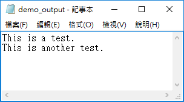

"开发者工具"一一"插入"一一"按钮"；右键"按钮"选择"属性"可对"按钮"进行相关的设置（如名 称、颜色）等。
在”设计模式"下(非"设计模式"不可)双击"按钮''，写入如下代码：
Private Sub say_hello_Click() MsgBOX "Hi,欢迎您学习VBA~!" End Sub Private Sub CommandButton1_Click() Call say_hello_Click() End Sub
然后在非"设计模式"下点击"按钮"即可执行。
MsgBox函数显示一个消息框，并等待用户点击一个按钮，然后根据用户点击的按钮执行相关的操作。
Function MessageBoxDemo() ' Message Box with just prompt message MsgBox(“欢迎您~") ' 括号中为显示的内容 ' Message Box with title, yes no and cancel Butttons result = MsgBox("你喜欢蓝色吗?", 3, "选择一个选项”）' 3为显示3个按钮; "选择一个选项" 为标题栏 ' Assume that you press No Button , MsgBox("返回 result 的值是：" & result) End Function
InputBox函数提示用户输入值。当输入值后，如果用户单击确定按钮或按下键逸上的ENTER 键，InputBox函数将返回文本框中的文本。如果用户单击"取消"按钮，该函数将返回一个空字符串。
Function CountArea() Dim Length As Double Dim Width As Double Length = InputBox("输入一个长度值： ", "输入长度"） Width = InputBox("输入一个宽度值：", "输入宽度”） findArea = Length * Width CountArea = findArea End Function
运行时，选中一个单元格，然后输入=countArea后回车即可执行。
变量的命名规则：
变量使用的语法：
在VBA中，在使用变量前需要对其进行声明。
语法为：Dim <<variable name>> As <<variable_type>>。
**强制声明变量：在所有代码的最开头写Option Explicit。
数裾类型分类：
在VBA中，数据类型可分为两类：数据型和非数据型。
Private Sub VariablesDemo() Dim password As String password ="123456" Dim num As Integer num = 1234 Dim BirthDay As Date BirthDay = DateValue("1998-10-11") MsgBox (”设置的密码是：” & password & Chr(10) & ” num的值是：” & num & Chr(10) & ''Birthday的值是：" & Birthday) End Sub
常量用于保存程序执行期间固定（无法更改）的值。如果用户试图更改常量值，则程序执行结束时会出现错误。
常量的命名规则：（与变量命名规则一样）
常量使用的语法：
在VBA中，在使用常量前需要对其进行声明。
语法为: Const <<constant_name>> As <<constant_type>> = <<constant_value>>
Private Sub ConstantDemo() Const Mylnteger As Integer = 720 Const myDate As Date = #10/21/2000# Const myDay As String = "Sunday" MsgBox (”整数值是：” & Mylnteger & Chr(10) & "myDate的值是：” & myDate & Chr(10) & myDay的值是：" & myDay) End Sub
VBA支持的运算符类型： 算术运算符、比较运算符、逻辑(关系)运算符、连接运算符。
VBA提供以下选择语句：
• if语句
lf(boolean_expression) Then Statement 1 ...... Statement n End If
lf(boolean_expression) Then Statement 1 ...... Statement n Else Statement 1 ...... Statement n End If
If(boolean_expression) Then Statement 1 ...... Statement n Elself (boolean_expression) Then Statement 1 ...... Statement n Elself (boolean_expression) Then Statement 1 ...... Statement n Else Statement 1 ...... Statement n End If
lf (boolean_expression) Then Statement 1 ...... Statement n lf(boolean_expression) Then Statement 1 ....... Statement n Elself (boolean_expression) Then Statement 1 ...... Statement n Else Statement 1 ...... Statement n End If Else Statement 1 ...... Statement n End If
Select Case expression Case expressionlist1 statement1 statement2 ...... Case expressionlistn statement1 statement2 ...... Case Else elsestatement1 elsestatement2 ...... End Select
VBA提供以下循环语句：
指定次数来重复执行一组语句。
For counter = start To end [Step stepcount] [statement 1] [statement 2] ...... [statement n] [Exit For] [statement 11] [statement 22] ...... [statement n] Next
循环中可以在任何位置放置任意个ExitFor语句，随时退出循环。ExitFor经常在条件判断之后使用，例如lf...Then，并将控制权转移到紧接在Next之后的语句。
Private Sub Constant_demo_Click() Dim a As Integer a = 10 For j = 0 To a Step 2 MsgBox ("The value is i is :" & i) Next End Sub
For Each循环主要是用于为数组或集合中的每个元素执行语句或一组语句。
For Each循环与For循环类似；然而，For Each循环是为数组或组中的每个元素执行的。因此，这种类型的循环中将不存在步计数器。它主要用于数组或在文件系统对象的上下文中使用，以便递归操作。
For Each element In Group [statement 1] [statement 2] ...... [statement n] [Exit For] [statement 11] ...... [statement 22] Next Private Sub Constant_demo_Click() ' fruits is an array fruits=Array('苹果","桓子","樱桃") Dim fruitnames As Variant ' iterating using For each loop. For Each Item In friuits fruitnames = fruitnames & Item & Chr(10) Next MsgBox fruitnames End Sub
在进入循环之前检查条件式：
Do {while|until} condition Statements Loop ------- Sub ChkFirstWhile() counter = 0 myNum = 20 Do While myNum > 10 myNum = myNum - 1 counter = counter + 1 Loop MsgBox "The loop made" & counter & "repetitions." End Sub SubChkFirstUntil() counter = 0 myNum = 20 Do Until myNum = 10 myNum = myNum -1 counter = counter + 1 Loop MsgBox "The loop made" & counter & "repetitions. " End Sub
在循环至少运行一次之后才检查条件式：
Do Statements Loop {white I until} condition ------- Sub ChkLastWhile() counter = 0 myNum = 9 Do myNum = myNum - 1 counter = counter + 1 Loop While myNum > 10 MsgBox "The loop made" & counter & "repetitions." End Sub Sub ChkLastUntil() counter = 0 myNum = 1 Do myNum = myNum + 1 counter = counter + 1 Loop Until myNum = 10 MsgBox "The loop made" & counter & "repetitions." End Sub
在while...wend循环中，如果条件为True，则会执行所有语句，直到遇到wend关键字。如果条件为false， 则退出循环，然后控件跳转到wend关键字后面的下一个语句。
While condition(s) [statements 1] [statements 2] ...... [statements n] Wend Private Sub Constant_demo_click() Dim Counter Counter = 10 While Counter < 15 ' Test value of Counter. Counter = Counter + 1 ' Increment Counter. msgbox "The Current Value of the Counter is : " & Counter Wend ' While loop exits if counter Value becomes 15. End Sub
当上面的代码被执行时，它会在消息框中打印以下内容：
The Current Value of the Counter is: 11 The Current Value of the Counter is: 12 The Current Value of the Counter is: 13 The Current Value of the Counter is: 14 The Current Value of the Counter is: 15
循环控制语句：
循环控制语句可使程序从正常顺序改变执行。当执行离开一个作用域时，循环中的所有其余语句都不会被执行。
VBA支持以下控制语句：
With语句：
在一个单一对象或一个用户定义类型上执行一系列的语句。
语法为：
With object [statements] End With
With语句可以对某个对象执行一系列的语句，而不用重复指出对象的名称。例如，要改变 一个对象的多个属性，可以在with控制结构中加上属性的赋值语句，这时候只是引用对象 一次而不是在每个属性赋值时都要引用它。下面的例子显示了如何使用With语句来给同一个对象的几个属性赋值。
With MyLabel .Height = 2000 .Width = 2000 .Caption = "This is MyLabel" End With
注意：当程序一旦进入with块，object就不能改变。因此不能用一个with语句来设置多个不同的对象。
字符串语法：variable_name = "this is a string"
VBA支持的字符串方法：
预定义的VBA字符串函数对于处理字符串很有用。VBA中支持的字符串方法如下：
日期和时间函数可以将日期和时间从一种格式转换为另一种格式，或以适合特定条件的格式 表示日期或时间值。
日期函数：
时间函数：
数组变量：一系列值存储在一个变量中。
数组的声明：
数组声明的方式与声明变量相同，只是数组变量的声明使用括号。在下面的例子中，括号里提到了数组的大小。
' Method 1; Using Dim Dim arr1() 'Without Size ' Method 2: Mentioning the Size Dim arr2(5) ' Declared with size of 5 ' Method 3: using 'Array' Parameter Dim arr3 arr3 = Array(“apple”, ”orange”, “grapes”)
在上面代码中：
数组的赋值：
Private Sub Constant_demo_Click() Dim arr(5) arr(0) = "1" ' Number as String arr(1) = "VBScript" ' String arr(2) = 100 ' Number arr(3) = 2.45 ' Decimal Number arr(4) = #10/07/2013# ' Date arr(5) = #12.45 PM# ' Time msgbox("Value stored in Array index 0 :" & arr(0)) msgbox("Value stored in Array index 1:" & arr(1)) msgbox("Value stored in Array index 2 :" & arr(2)) msgbox("Value stored in Array index 3 :" & arr(3)) msgbox("Value stored in Array index 4:" & arr(4)) msgbox("Value stored in Array index 5 :" & arr(5)) End Sub
多维数组：
数组最多可以有60个维度；二维数组是最常用的数组。
Private Sub Constant_demo_Click() Dim arr(2,3) as Variant ' Which has 3 rows and 4 columns arr(0,0) = "Apple" arr(0,1) = "Orange" arr(0,2) = "Grapes" arr(0,3) = "pineapple" ...... msgbox("Value in Array index 0,1:" & arr(0,1)) msgbox("Value in Array index 2,2:" & arr(2,2)) End Sub
ReDim语句：
ReDim语句可以为数组变量重新分配存储空间。
可以使用 ReDim语句来更改某个己声明数组的一个或多个维度的大小。如果数组较大，并且你不再需要它的某些元素，ReDim可通过减少数组大小来释放内存。另一方面，如果数组需要更多元素，也可使用ReDim进行添加。
ReDim语句仅供数组使用。它对标量(仅包含单个值的变量)、集合或结构无效。请注意，如果将变量声明为Array类型，则ReDim语句将设有足够的类型信息来创建新数组。
语法为： ReDim [ Preserve ] name(boundlist) [, name(boundlist)[，... ] ]
Private Sub Constant_demo_Click() Dim a() as variant i = 0 redim a(5) a(0) = "XYZ" a(1) =41.25 a(2) = 22 REDIM PRESERVE a(7) For i = 3 to 7 a(i) = i Next ' to Fetch the output For i =0 to ubound(a) Msgbox a(i) Next End Sub
输出结果为：
XYZ 41.25 22 3 4 5 6 7
可以数组一起使用的方法：
声明数组
因为数组也是变量，所以，你必须用声明其它变量的类似方法声明数组——使用Dim语句。当你声明一个数组时，你便设定了该数组储存数据所需要的内存空间。
我们来看看一个数组声明的例子：
Dim cities(6) As String Dim daysOfWeek(7) As String Dim lotto(6) As Integer Dim exchange(5, 3) As Variant
注意，变量名称后面带有括号以及括号里有数字。一维数组要求括号里带一个数字，这个数字决定了这个数组能够储存的最大成员数。二维数组后面总是带有两个数字——第一个数字是行索引号，而第二个数字是列索引号。在上面的例子里，数组exchange最多可以储存15个数据(5*3=15)。
数组声明的最后一部份是定义数组将要储存数据的数据类型。数组可以储存下列任何一种数据类型：Integer, Long, Single, Double, Variant, Currency, String, Boolean, Byte, or Date。
当你声明了一个数组，VB会自动占据足够的内存空间，分配的内存空间取决于该数组的大小和数据类型。当你声明一个名叫lotto的带有6个成员的一维数组时，VB将留出12个字节——数组的每个成员各占2个字节（回想整型数据类型为2个字节，因此2*6=12）。数组越大，储存数据需要的内存空间就越大。因为数组会吃掉很多内存，并因此影响你电脑的运行，因此，建议你仅仅根据你可能使用的成员数来声明数组。
数组的上界和下界
VBA默认将数组的第一个成员设置为0（索引号），因此，数字1代表数组中的第二个成员，而数字2则代表第三个，等等。因为数字编号起始于0，所以，一维数组cities(6)包含从0到6的七个成员。如果你宁愿从1开始计数你数组里的成员，那么你可以使用Option Base 1语句来强制指定该数组的下界。该指令必须置于VBA模块任何Sub语句上面的声明部分。如果你不明确Option Base 1，那么VBA在使用数组是就会假定使用Option Base 0来从0开始编号你的数组成员。
你也可以让数组从除0或1之外的数字开始编号，要达到该目的，你在声明数组变量时就必须明确该数组的边界。数组的边界是指它最小和最大的索引号。我们来看看下面的例子：
Dim cities(3 To 6) As Integer
上面的语句声明了一个带有四个成员的一维数组。数组名称后面括号里的数字明确了数组的下界（3）和上界（6）。该数组的第一个成员编号为3，第二个为4，第三个为5，以及第四个为6。注意下界和上界之间的关键字To。
技巧：数组范围
Dim语句明确的数组的下标区间就称为数组的范围，例如：Dim mktgCodes(5 To 15)
在VBA过程里使用数组
你声明了数组后，就必须给该数组的每个成员赋值，这也经常成为“填充数组”。我们来尝试使用一维数组有规划地显示六个美国城市的清单：
' start indexing array elements at 1 从1开始给数组成员编号 Option Base 1 Sub FavoriteCities() 'now declare the array Dim cities(6) As String 'assign the values to array elements cities(1) = "Baltimore" cities(2) = "Atlanta" cities(3) = "Boston" cities(4) = "Washington" cities(5) = "New York" cities(6) = "Trenton" 'display the list of cities MsgBox cities(1) & Chr(13) & cities(2) & Chr(13) _ & cities(3) & Chr(13) & cities(4) & Chr(13) _ & cities (5) & Chr(13) & cities(6) End Sub
在FavoriteCities过程开始之前，缺省的索引编号方式改变了，注意，Option Base 1语句是位于模块窗口Sub语句之上的。该语句告诉VB给数组的第一个成员赋值数字1，而不是缺省的0。
数组cities()声明为带六个成员的字符串类型变量。然后，给数组的每个成员都赋上了值。最后的语句使用Msgbox函数显示城市清单。当你运行该过程时，城市名称将会出现在分开的行上（参见图7-1）。你可以改变显示数据的顺序，改变索引号。
技巧： 数组成员的初始值
在给数组成员赋值之前，该成员具有缺省值。数字变量的缺省值为0，而字符串变量的缺省值为空字符串。
一个VBA函数可以有一个可选的return语句。如果要从函数返回值，则可使用return语句。
语法：
Function Functionname(parameter-list) statement 1 statement 2 ...... statement n End Function
可以使用函数名称本身返回值。
Function findArea(Length As Double, Optional Width As variant) If IsMissing(Width) Then findArea = Length * Length Else findArea = Length * Width End If End Function
调用函数： 使用函数名称调用函数。
子程序/子过程与函数类似，但有一些差异：
调用子程序： 不能在工作表中直接调用子程序。
VBA中有两种事件：
工作表事件：
工作表事件在工作表中发生更改时被触发。可通过选中想要修改的工作表，然后右键选择”查看代码"来进行编辑。
用户可以选择这些工作表中的每一个，并从下拉列表中选择"工作表"以获取所有支持的工作表事件的列表。
双击之前显示一条消息：
Private Sub Worksheet_BeforeDoubleClick(ByVal Target As Range, Cancel As Boolean) MsgBox("这是一个双击事件触发提示”） End Sub
双击任何单元格后，消息框将息示给用户。
工作簿事件：
工作簿事件总是在工作簿发生更改时触发的。可以通过选择”ThisWorkbook”并从下拉列表中选择"workbook"来添加工作簿事件的代码。
创建工作表后显示一条消息：
Private Sub Workbook_NewSheet(ByVal Sh As object) MsgBox "New Sheet Created Successfully" End Sub
可在工作簿中创建一个工作表来触发上述代码。
错误类型：
在VBA编程中有三种类型的错误：
语法错误：
语法错误(也称为解析错误)发生在VBA的解释时间。例如，下面一行导致语法错误，因为它缺少一个右括号。
Function ErrorHanlding_Demo() dim x, y x = "Yiibai Yiibai" y = Ucase(x End Function
运行时错误：
运行时错误(也称为异常)在执行期间发生，在解释之后。例如，下面的行会导致运行时错误， 因为这里的语法是正确的，但是在运行时它正在尝试调用fnmultiply, 但这是一个不存在的函数。
Function ErrorHanlding_Demol() Dim x, y x = 10 y=20 z = fnadd(x,y) a = fnmultiply(x,y) End Function Function fnadd(x, y) fnadd=x+y End Function
逻辑错误：
逻辑错误可能是最难追査的错误类型。这些错误不是语法或运行时错误的结果。相反，当您在驱动脚本的逻辑中犯了一个错误，并且没有得到预期的结果时，就会发生这种情况。 你可能无法捕捉到这些错误，因为这取决于业务需求，在程序中加入什么类型的逻辑。例如，将一个数字除以零，或写入一个进入无限循环的脚本。
Error对象：
假设我们有一个运行时错误，那么通过是示错误信息来停止执行。作为开发人员，如果想捕获错误，那么使用Error对象。
在下面的例子中，Err.Number给出错误号，Err.Description给出错误描述。
Err.Raise 6 ' Raise an overflow error. MsgBox "Error # " & CStr(Err.Number) & " " & Err.Description Err.Clear ' clear the error.
错误处理：
VBA启用错误处理例程，也可以用来禁用错误处理例程。没有On Error语句，发生的任何运行时错误都是致命的：显示错误消息，并且执行突然停止。
On Error {GoTo [ line | 0 | -1] | Resume Next}
Public Sub OnErrorDemo() On Error GoTo ErrorHandler ' Enable error-handling routine. Dim x, y, z As Integer x = 50 y = 0 z = X / Y ' Divide by ZERO Error Raises ErrorHandler: ' Error-handling routine. Select Case Err.Number ' Evaluate error number. Case 10 ' Divide by zero error MsgBox ("You attempted to divide by zero!) Case Else MsgBox "UNKNOWN ERROR - Error#" & Err.Number & " : " & Err.Description End Select Resume Next End Sub
示例：
Sub example() On Error GoTo ERROR1 ...要捕获的代码部分... On Error GoTo 0 ...其它代码... Sub的结尾处； ERROR1: MsgBox("a error happens") Exit Sub ' 注意有了错误捕获处理后正常程序控制结尾要有Exit Sub，否则会对所有Error处理代码进行运行。 End Sub
使用VBA进行编程时，用户将要处理的重要对象很少。 下面是一些常见的对象：
应用程序对象：
应用程序对象由以下部分组成：
' Example 1: Set xlapp = CreateObject("Excel.Sheet") xlapp.Application.Workbooks.Open "C:\test.xls ' Example 2: Application.Windows("test.xls").Activate ' Example 3: Application.ActiveCell.Font.Bold = True
工作簿对象：
Workbook对象是Workbooks集合的成员，并包含当前在Microsoft Excel中打开的所有Workbook对象。
' Ex 1: To close workbooks Workbooks.Close ' Ex 2: To Add an Empty WorkBook Workbooks.Add ' Ex 3: To Open a Workbook Workbooks.Open FileName:="Test.xls", ReadOnly:=True ' Ex 4: To Activate WorkBooks Workbooks("Test.xls").Worksheets("Sheet1").Activate
工作表对象：
工作表对象是工作表集合的成员，并包含工作簿中的所有工作表对象。
' Ex 1: To make it Invisible Worksheets(1).Visible = False ' Ex 2: To protect an Worksheet Worksheets("Sheet1").Protect password:=strPassword, scenarios:=True
范围对象：
Range对象表示单元格，行，列或包含一个或多个连续单元格块的单元格的选择。
' Ex 1: To Put a value in the cell A5 Worksheets("Sheet1").Range("A5").Value = "5235 ' Ex 2: To put a value in range of Cells Worksheets("Sheet1").Range("Al:A4").Value = 5
VBA允许用户使用两种方法处理文本文件：
Exit语句可以实现退出Do...Loop、 For...Next、Function、Sub或Propery代码块。
Exit Do: 提供一种退出Do...Loop循环的方法，并且只能在Do...Loop循环中使用。
Exit Do会将控制权转移到Loop语句之后的语句。当Exit Do用在嵌套的Do...Loop循环中时，Exit Do会将控制权转移到Exit Do所在位置的外层循环。
Exit For: 提供一种退出For循环的方法，并且只能在For...Next或For Each...Next循环中使用。Exit For会将控制权转移到Next之后的语句。当Exit For用在嵌套的For循环中时，Exit For将控制权转移到Exit For所在位置的外层循环。
Exit Sub: 立即从包含该语句的Sub过程中退出。程序会从调用Sub过程的语句之后的语句继续执行。
Exit Function:立即从包含该语句的Function过程中退出。程序会从调用Function的语句之后的语句继续执行。
Exit Property: 立即从包含该语句的Property过程中退出。程序会从调用Property过程的语句之后的语句继续执行。
若要在VBA中读取外部的文字档，可以使用Open来开启档案，其语法为：
Open 档案位置For Input As 档案代码
档案位置就是档案在硬碟中的路径，VBA在开启档案之后，会使用档案代码来辨识档案，每个已开启的档案都会对应一个不重复的档案代码，例如#1、#2等，编号可以不连续，但不可以重复。
开启档案之后，通常我们会使用回圈的方式来读取整个档案内容，每次以Line读取一行资料，然后藉由EOF（end of file）来判断档案是否已经读取到结尾，如果读取至结尾则跳出回圈。
在档案开启之后，后续所有的档案读取以及判断档案结尾等动作，都会使用档案代码的方式来指定档案。
以下是一个简单的范例：
Dim FilePath As String '文字档案位置 FilePath = "C:\ExcelDemo\demo.txt" '开启FilePath文字档，使用编号#1档案代码 Open FilePath For Input As # 1 '执行回圈，直到编号#1档案遇到结尾为止 Do Until EOF ( 1 ) '从编号#1档案读取一行资料 Line Input # 1 , LineFromFile '输出一行资料 MsgBox ( LineFromFile ) Loop '关闭编号#1档案 Close # 1
VBA 读取文字档案
这个范例会开启C:\ExcelDemo\demo.txt这个文字档（执行时请自己建立这个档案），并将其设定为编号#1的档案，如果要开启多个档案时，则可自行变更每个档案的代码，例如#2、#3等。
在回圈的判断式中，我们使用EOF(1)来判断编号#1的档案是否已经到达结尾处。
在读档的动作则使用Line从Input #1之中读取一行资料，然后将这一行资料储存在LineFromFile这个变数当中。
当档案使用完毕之后，要使用Close将开启的档案关闭。
若要将资料写入外部的文字档，一开始也是使用Open开启档案：
Open 档案位置For Output As 档案代码
这个语法跟之前读档的语法类似，只是把开档的模式改为Output，档案位置就填入要写入的档案路径，而档案代码也是自己取一个不重复的数字即可。开启档案之后，即可使用Print函数将指定的资料写入档案中。
Dim OutputFilePath As String Dim Content As String '文字档案位置 OutputFilePath = "C:\ExcelDemo\demo_output.txt" '开启OutputFilePath文字档，使用编号#2档案代码 Open OutputFilePath For Output As # 2 '要写入档案的内容 Content = "This is a test." '将Content的内容写入编号#2的档案 Print # 2 , Content '关闭编号#2档案 Close # 2
VBA 写入文字档案
这个范例会打开C:\ExcelDemo\demo_output.txt这个档案，然后将Content变数的内容以Print写入其中，最后呼叫Close将档案关闭。而在写入完成后，demo_output.txt的档案内容如下：
如果呼叫Print时，省略要写入的资料，就会写入空白行至档案中：
'写入空白行 Print # 2 ,
若要拼凑多个变数，产生想要的排版格式，可以使用分号将多个资料串起来：
'以空白分隔 Print # 2 , "Hello" ; " " ; "World" '以5个空白分隔 Print # 2 , "Hello" ; Spc ( 5 ) ; "World" Dim MyBool As Boolean MyBool = True '输出字串与布林变数 Print # 2 , "The " ; MyBool; " is a Boolean value." Dim MyInt As Integer MyInt = 123 '输出字串与整数变数 Print # 2 , "The" ; MyInt; "is a Integer value."
这是写入的档案内容：
写入档案的内容
更多Print的范例，可以参考MSDN的说明文件。
除了使用Print之外，还有一个Write也可以写入档案，它会自动将文字的内容加上双引号，并以逗号分隔多个输入变数，以下是一个范例（将上面Print的位置直接替换成Write即可） ：
'以逗号分隔，写入档案 Write # 2 , "Hello, World" , 123
Write在写入档案时，会将几种VBA变数转换为特殊的格式，例如True就会转为#TRUE#，详细的说明请参考MSDN的说明文件。
当我们用Output模式写入一个已经存在的档案时，如果档案中存在有旧的内容的话，在写入之后就会将旧的内容覆盖掉，若想要保留旧资料，并增加一些内容接在原本资料的后方，就可以用附加的方式（append）写入档案，最典型的使用情境就是将程式输出讯息写入记录档。
若要以附加方式写入档案，只要将开档的模式改为Append即可，以下是一个简单的范例：
Dim OutputFilePath As String Dim Content As String OutputFilePath = "C:\ExcelDemo\demo_output.txt" '建立文字档 Open OutputFilePath For Output As # 2 Content = "This is a test." Print # 2 , Content Close # 2 '附加方式写入档案 Open OutputFilePath For Append As # 3 Content = "This is another test." Print # 3 , Content Close # 3
执行之后，demo_output.txt的内容如下：

VBA的开档模式除了Input、Output与Append之外，还有用于二进位档案的Binary模式，以及用于随机存取的Random模式，不过另外这两种一般人比较少用，就不介绍了，有兴趣的人请参考MSDN的说明。
如果要使用程式自动开启多个档案，不想使用手动指定档案代码的话，可以使用FreeFile这个函数自动取得可用的档案代码，以下是一个简单的使用范例：
Dim FileCount As Integer Dim FileNumber As Integer Dim FileName As String '使用回圈自动写入5个档案 For FileCount = 1 To 5 '自动取得档案代码 FileNumber = FreeFile () '档案名称 FileName = "C:\ExcelDemo\demo_output_" & FileCount & ".txt" '开启档案 Open FileName For Output As # FileNumber '写入档案 Print # FileNumber , "Hello, World" '关闭档案 Close # FileNumber Next FileCount
这个范例会自动写入五个档案，程式设计者不需要检查可用的档案代码，在较复杂的程式中，建议使用这种方式，可以避免不小心造成档案代码冲突的问题。